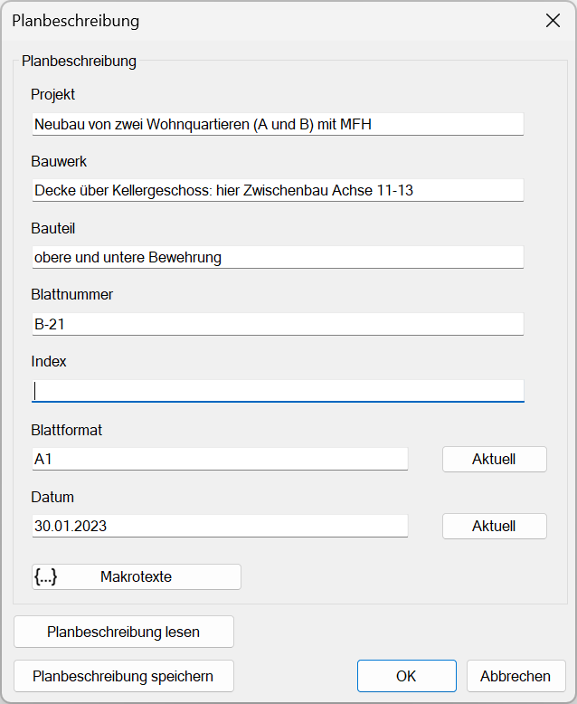
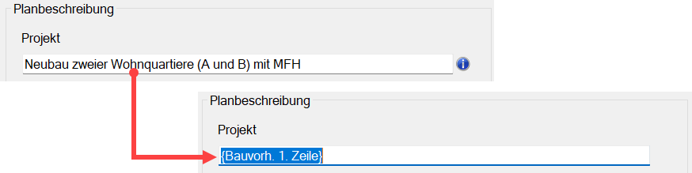
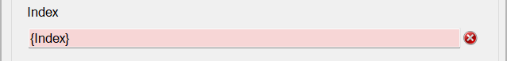
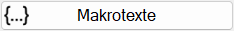
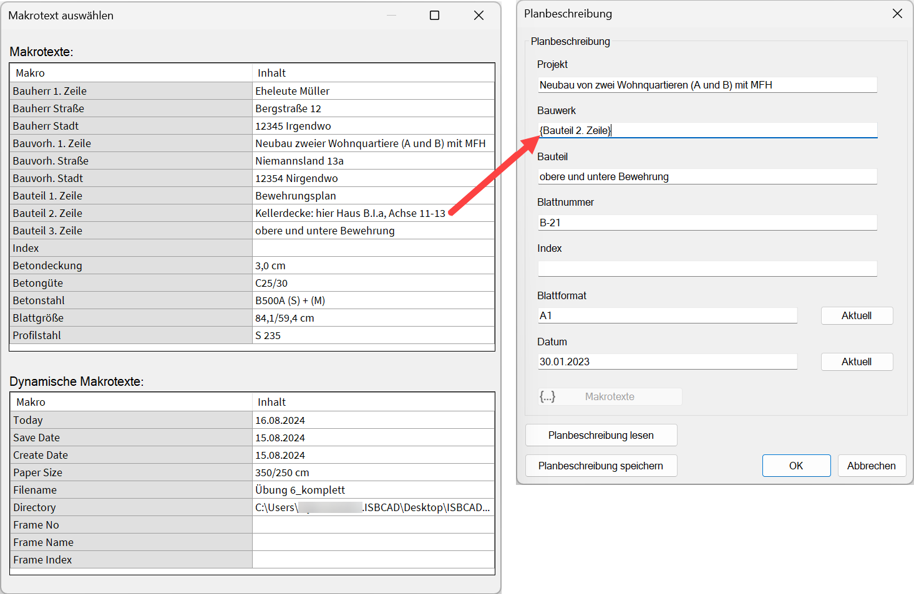

")
Angaben für die Planbeschreibung. Öffnet den Dialog Planbeschreibung.
Vorbemerkungen:
·Bei der Ausgabe der Stahlliste mit [Option | StlLis | Neu erzeugen] können die Texte der Listenköpfe aus diesen Angaben erstellt werden. Die Informationen werden auch von der Planverwaltung übernommen.
·Für Teillisten, Nachtragslisten oder Auszüge aus der Stahlliste kann die Planbeschreibung für die Ausgabe innerhalb des Stahllisten-Dialogs temporär geändert werden.
·Die aktuelle Planbeschreibungsdatei PLAN.BES wird immer im aktuellen Projektverzeichnis gespeichert. Wenn Sie das Projektverzeichnis wechseln [SysDat | Datei öffnen/speichern | Projektverzeichnis], existiert die Datei PLAN.BES noch nicht. Diese wird erst angelegt, wenn Sie das geänderte Projektverzeichnis im hier beschriebenen Dialog mit OK bestätigen.
·Die hier eingegebenen Informationen werden als AKT-Dateiinformationen im Vorschaubereich des Windows-Explorers und der ISBCAD Startseite angezeigt.
·Die Blattnummer und der Index werden im Stahllistenkopf zur Plannr. zusammengeführt.
Optionen im Dialog "Planbeschreibung"
 |
Um Eingaben zu bearbeiten
§Klicken Sie in ein Eingabefeld und tragen Sie den Text ein.
§Texte können Sie durch Doppelklick mit der linken Maustaste markieren und durch die Neueingabe eines Textes ersetzen.
§Mit der Tab-Taste können Sie zur nächsten Eingabe wechseln.
Das Symbol  gibt an, dass in der Eingabe mindestens ein Makrotext enthalten ist. Wenn Sie hineinklicken, wird die Variable in die Eingabe geschrieben. Sie können den Makrotext entfernen oder Text hinzufügen. Um den Makrotext zu ersetzen oder einen anderen hinzuzufügen, klicken Sie unter den Eingabefeldern auf die Schaltfläche {...} Makrotexte (s. weiter unter).
gibt an, dass in der Eingabe mindestens ein Makrotext enthalten ist. Wenn Sie hineinklicken, wird die Variable in die Eingabe geschrieben. Sie können den Makrotext entfernen oder Text hinzufügen. Um den Makrotext zu ersetzen oder einen anderen hinzuzufügen, klicken Sie unter den Eingabefeldern auf die Schaltfläche {...} Makrotexte (s. weiter unter).
Makrotexte können in jedem Eingabefeld verwendet werden.

Nicht definierte Makrotexte
Falls in der Planbeschreibung Makrotexte verwendet werden, die im Makrotext-Editor nicht vorhanden sind, wird dies durch dieses Symbol kenntlich gemacht. Dazu kommt es, wenn Sie eine Planbeschreibung einlesen, die Makrotexte enthält, die im Makrotext-Editor der aktuell geöffneten Zeichnung nicht definiert sind. Fahren Sie mit der Maus über das Symbol, um sich die fehlenden Makrotexte anzeigen zu lassen. Sie können die fehlenden Makrotexte im Makrotext-Editor definieren oder über die Schaltfläche {...} Makrotexte durch bestehende Makrotexte ersetzen oder einen individuellen Text einfügen.

 |
Öffnet einen Dialog zum Einfügen von Makrotexten. |
Im Dialog Makrotexte auswählen werden Ihnen alle verfügbaren benutzerdefinierten und dynamischen Makrotexte angezeigt. Je nach fokussierter Eingabe wird der Text im Eingabefeld der Planbeschreibung markiert. Sie können den Text durch einen anderen Makrotext ersetzen, indem Sie entweder einen Text in der Spalte Makro oder Inhalt doppelklicken. Sie können vor und nach dem Makrotext weiteren Text hinzufügen. Setzen Sie dazu die Einfügemarke an die gewünschte Position.
 |
Blattformat
Angabe des Blattformates. Mit Aktuell wird das Blattformat der aktuell geöffneten Zeichnung übernommen. Wenn Sie den dynamischen Makrotext {Paper Size} einsetzen, können Sie die Einheit des Blattformats bearbeiten.
Datum
Angabe des Datums. Mit Aktuell wird das aktuelle Datum gesetzt. Wenn Sie einen dynamischen Makrotext als Datum einsetzen (z. B. {Today}) können Sie das Datumsformat bearbeiten.
Planbeschreibung lesen
Daten aus einer vorhandenen Planbeschreibung übernehmen. Öffnet die Dateiauswahl.
Planbeschreibung speichern
Im Eingabedialog können Sie den Dateinamen und den Speicherort angeben. Vorschlag ist das aktuelle Projektverzeichnis. Sie können damit z. B. unterschiedliche Dateien für Schal- und Bewehrungspläne anlegen. Die aktuelle Planbeschreibung steht jedoch weiterhin in der Datei Plan.bes.
OK
Übernimmt die Änderungen.
Abbrechen
Verwirft die Änderungen.
Siehe auch: